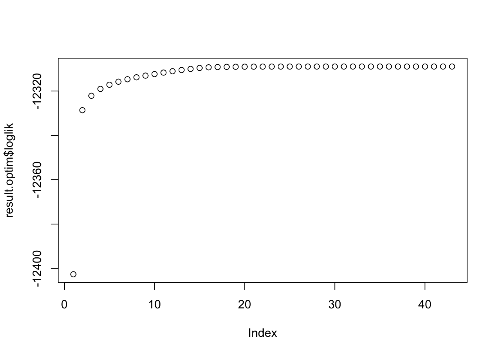
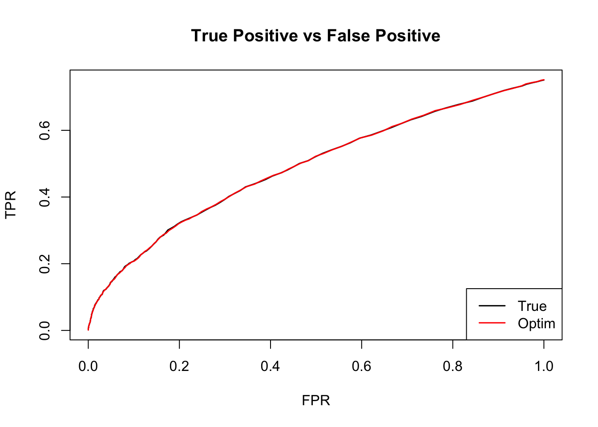

Last updated: 2018-10-08
workflowr checks: (Click a bullet for more information) ✔ R Markdown file: up-to-date
Great! Since the R Markdown file has been committed to the Git repository, you know the exact version of the code that produced these results.
✔ Environment: empty
Great job! The global environment was empty. Objects defined in the global environment can affect the analysis in your R Markdown file in unknown ways. For reproduciblity it’s best to always run the code in an empty environment.
✔ Seed:
set.seed(1)
The command set.seed(1) was run prior to running the code in the R Markdown file. Setting a seed ensures that any results that rely on randomness, e.g. subsampling or permutations, are reproducible.
✔ Session information: recorded
Great job! Recording the operating system, R version, and package versions is critical for reproducibility.
✔ Repository version: 83adaa6
wflow_publish or wflow_git_commit). workflowr only checks the R Markdown file, but you know if there are other scripts or data files that it depends on. Below is the status of the Git repository when the results were generated:
Ignored files:
Ignored: .DS_Store
Ignored: .Rhistory
Ignored: .Rproj.user/
Ignored: analysis/.DS_Store
Ignored: analysis/.Rhistory
Ignored: analysis/include/.DS_Store
Ignored: code/.DS_Store
Ignored: data/.DS_Store
Ignored: docs/.DS_Store
Ignored: output/.DS_Store
Untracked files:
Untracked: analysis/Classify.Rmd
Untracked: analysis/EstimateCorEM2.Rmd
Untracked: analysis/EstimateCorEM3.Rmd
Untracked: analysis/EstimateCorMaxEMGD.Rmd
Untracked: analysis/EstimateCorMaxGD.Rmd
Untracked: analysis/EstimateCorMaxMV.Rmd
Untracked: analysis/EstimateCorOptimEM.Rmd
Untracked: analysis/EstimateCorPrior.Rmd
Untracked: analysis/EstimateCorSol.Rmd
Untracked: analysis/HierarchicalFlashSim.Rmd
Untracked: analysis/MashLowSignalGTEx4.Rmd
Untracked: analysis/Mash_GTEx.Rmd
Untracked: analysis/MeanAsh.Rmd
Untracked: analysis/OutlierDetection.Rmd
Untracked: analysis/OutlierDetection2.Rmd
Untracked: analysis/OutlierDetection3.Rmd
Untracked: analysis/OutlierDetection4.Rmd
Untracked: analysis/mash_missing_row.Rmd
Untracked: code/GTExNullModel.R
Untracked: code/MASH.result.1.rds
Untracked: code/MashClassify.R
Untracked: code/MashCorResult.R
Untracked: code/MashNULLCorResult.R
Untracked: code/MashSource.R
Untracked: code/Weight_plot.R
Untracked: code/addemV.R
Untracked: code/estimate_cor.R
Untracked: code/generateDataV.R
Untracked: code/johnprocess.R
Untracked: code/sim_mean_sig.R
Untracked: code/summary.R
Untracked: data/Blischak_et_al_2015/
Untracked: data/scale_data.rds
Untracked: docs/figure/Classify.Rmd/
Untracked: docs/figure/OutlierDetection.Rmd/
Untracked: docs/figure/OutlierDetection2.Rmd/
Untracked: docs/figure/OutlierDetection3.Rmd/
Untracked: docs/figure/Test.Rmd/
Untracked: docs/figure/mash_missing_whole_row_5.Rmd/
Untracked: docs/include/
Untracked: output/AddEMV/
Untracked: output/CovED_UKBio_strong.rds
Untracked: output/CovED_UKBio_strong_Z.rds
Untracked: output/Flash_UKBio_strong.rds
Untracked: output/GTExNULLres/
Untracked: output/GTEx_2.5_nullData.rds
Untracked: output/GTEx_2.5_nullModel.rds
Untracked: output/GTEx_2.5_nullPermData.rds
Untracked: output/GTEx_2.5_nullPermModel.rds
Untracked: output/GTEx_3.5_nullData.rds
Untracked: output/GTEx_3.5_nullModel.rds
Untracked: output/GTEx_3.5_nullPermData.rds
Untracked: output/GTEx_3.5_nullPermModel.rds
Untracked: output/GTEx_3_nullData.rds
Untracked: output/GTEx_3_nullModel.rds
Untracked: output/GTEx_3_nullPermData.rds
Untracked: output/GTEx_3_nullPermModel.rds
Untracked: output/GTEx_4.5_nullData.rds
Untracked: output/GTEx_4.5_nullModel.rds
Untracked: output/GTEx_4.5_nullPermData.rds
Untracked: output/GTEx_4.5_nullPermModel.rds
Untracked: output/GTEx_4_nullData.rds
Untracked: output/GTEx_4_nullModel.rds
Untracked: output/GTEx_4_nullPermData.rds
Untracked: output/GTEx_4_nullPermModel.rds
Untracked: output/MASH.10.em2.result.rds
Untracked: output/MASH.10.mle.result.rds
Untracked: output/MASHNULL.V.result.1.rds
Untracked: output/MASHNULL.V.result.10.rds
Untracked: output/MASHNULL.V.result.11.rds
Untracked: output/MASHNULL.V.result.12.rds
Untracked: output/MASHNULL.V.result.13.rds
Untracked: output/MASHNULL.V.result.14.rds
Untracked: output/MASHNULL.V.result.15.rds
Untracked: output/MASHNULL.V.result.16.rds
Untracked: output/MASHNULL.V.result.17.rds
Untracked: output/MASHNULL.V.result.18.rds
Untracked: output/MASHNULL.V.result.19.rds
Untracked: output/MASHNULL.V.result.2.rds
Untracked: output/MASHNULL.V.result.20.rds
Untracked: output/MASHNULL.V.result.3.rds
Untracked: output/MASHNULL.V.result.4.rds
Untracked: output/MASHNULL.V.result.5.rds
Untracked: output/MASHNULL.V.result.6.rds
Untracked: output/MASHNULL.V.result.7.rds
Untracked: output/MASHNULL.V.result.8.rds
Untracked: output/MASHNULL.V.result.9.rds
Untracked: output/MashCorSim--midway/
Untracked: output/Mash_EE_Cov_0_plusR1.rds
Untracked: output/UKBio_mash_model.rds
Unstaged changes:
Modified: analysis/EstimateCorEM.Rmd
Modified: analysis/EstimateCorIndex.Rmd
Deleted: analysis/EstimateCorMax.Rmd
Modified: analysis/EstimateCorMaxEM2.Rmd
Modified: analysis/EstimateCorMaxMash.Rmd
Deleted: analysis/MashLowSignalGTEx3.5P.Rmd
Modified: analysis/Mash_UKBio.Rmd
Modified: analysis/mash_missing_samplesize.Rmd
Modified: output/Flash_T2_0.rds
Modified: output/Flash_T2_0_mclust.rds
Modified: output/Mash_model_0_plusR1.rds
Modified: output/PresiAddVarCol.rds
library(mashr)Loading required package: ashrsource('../code/generateDataV.R')
source('../code/summary.R')
library(kableExtra)
library(knitr)We want to estimate \(\rho\) \[ \left(\begin{matrix} \hat{x} \\ \hat{y} \end{matrix} \right) | \left(\begin{matrix} x \\ y \end{matrix} \right) \sim N(\left(\begin{matrix} \hat{x} \\ \hat{y} \end{matrix} \right) ; \left(\begin{matrix} x \\ y \end{matrix} \right), \left( \begin{matrix} 1 & \rho \\ \rho & 1 \end{matrix} \right)) \] \[ \left(\begin{matrix} x \\ y \end{matrix} \right) \sim \sum_{k=0}^{K} \pi_{k} N( \left(\begin{matrix} x \\ y \end{matrix} \right); 0, U_{k} ) \] \(\Rightarrow\) \[ \left(\begin{matrix} \hat{x} \\ \hat{y} \end{matrix} \right) \sim \sum_{k=0}^{K} \pi_{k} N( \left(\begin{matrix} \hat{x} \\ \hat{y} \end{matrix} \right); 0, \left( \begin{matrix} 1 & \rho \\ \rho & 1 \end{matrix} \right) + U_{k} ) \] \[ \Sigma_{k} = \left( \begin{matrix} 1 & \rho \\ \rho & 1 \end{matrix} \right) + U_{k} = \left( \begin{matrix} 1 & \rho \\ \rho & 1 \end{matrix} \right) + \left( \begin{matrix} u_{k11} & u_{k12} \\ u_{k21} & u_{k22} \end{matrix} \right) = \left( \begin{matrix} 1+u_{k11} & \rho+u_{k12} \\ \rho+u_{k21} & 1+u_{k22} \end{matrix} \right) \] Let \(\sigma_{k11} = \sqrt{1+u_{k11}}\), \(\sigma_{k22} = \sqrt{1+u_{k22}}\), \(\phi_{k}=\frac{\rho+u_{k12}}{\sigma_{k11}\sigma_{k22}}\)
The loglikelihood is (with penalty) \[ l(\rho, \pi) = \sum_{i=1}^{n} \log \sum_{k=0}^{K} \pi_{k}N(x_{i}; 0, \Sigma_{k}) + \sum_{k=0}^{K} (\lambda_{k}-1) \log \pi_{k} \]
The penalty on \(\pi\) encourages over-estimation of \(\pi_{0}\), \(\lambda_{k}\geq 1\).
\[ l(\rho, \pi) = \sum_{i=1}^{n} \log \sum_{k=0}^{K} \pi_{k}\frac{1}{2\pi\sigma_{k11}\sigma_{k22}\sqrt{1-\phi_{k}^2}} \exp\left( -\frac{1}{2(1-\phi_{k}^2)}\left[ \frac{x_{i}^2}{\sigma_{k11}^2} + \frac{y_{i}^2}{\sigma_{k22}^2} - \frac{2\phi_{k}x_{i}y_{i}}{\sigma_{k11}\sigma_{k22}}\right] \right) + \sum_{k=0}^{K} (\lambda_{k}-1) \log \pi_{k} \]
Note: This probelm is convex with respect to \(\pi\). In terms of \(\rho\), the covenxity depends on the data.
Algorithm:
Input: X, init_rho, Ulist
Given rho, estimate pi by max loglikelihood (convex problem)
Compute loglikelihood
delta = 1
while delta > tol
Given pi, estimate rho by max loglikelihood (optim function)
Given rho, estimate pi by max loglikelihood (convex problem)
Compute loglikelihood
Update delta#' @param rho the off diagonal element of V, 2 by 2 correlation matrix
#' @param Ulist a list of covariance matrices, U_{k}
get_sigma <- function(rho, Ulist){
V <- matrix(c(1,rho,rho,1), 2,2)
lapply(Ulist, function(U) U + V)
}
penalty <- function(prior, pi_s){
subset <- (prior != 1.0)
sum((prior-1)[subset]*log(pi_s[subset]))
}
#' @title compute log likelihood
#' @param L log likelihoods,
#' where the (i,k)th entry is the log probability of observation i
#' given it came from component k of g
#' @param p the vector of mixture proportions
#' @param prior the weight for the penalty
compute.log.lik <- function(lL, p, prior){
p = normalize(pmax(0,p))
temp = log(exp(lL$loglik_matrix) %*% p)+lL$lfactors
return(sum(temp) + penalty(prior, p))
# return(sum(temp))
}
normalize <- function(x){
x/sum(x)
}#' @title Optimize rho with several initial values
#' @param X data, Z scores
#' @param Ulist a list of covariance matrices (expand)
#' @param init_rho initial value for rho. The user could provide several initial values as a vector.
#' @param prior indicates what penalty to use on the likelihood, if any
#' @return list of result
#' \item{result}{result from the rho which gives the highest log likelihood}
#' \item{status}{whether the result is global max or local max}
#' \item{loglik}{the loglikelihood value}
#' \item{rho}{the estimated rho}
#' \item{time}{the running time for each initial rho}
#'
optimize_pi_rho_times <- function(X, Ulist, init_rho=0, prior=c("nullbiased", "uniform"), tol=1e-5){
times = length(init_rho)
result = list()
loglik = c()
rho = c()
time.t = c()
for(i in 1:times){
out.time = system.time(result[[i]] <- optimize_pi_rho(X, Ulist,
init_rho=init_rho[i],
prior=prior,
tol=tol))
time.t = c(time.t, out.time['elapsed'])
loglik = c(loglik, tail(result[[i]]$loglik, n=1))
rho = c(rho, result[[i]]$rho)
}
if(abs(max(loglik) - min(loglik)) < 1e-4){
status = 'global'
}else{
status = 'local'
}
ind = which.max(loglik)
return(list(result = result[[ind]], status = status, loglik = loglik, time = time.t, rho=rho))
}
#' @title optimize rho
#' @param X data, Z scores
#' @param Ulist a list of covariance matrices
#' @param init_rho an initial value for rho
#' @param tol tolerance for optimizaiton stop
#' @param prior indicates what penalty to use on the likelihood, if any
#' @return list of result
#' \item{pi}{estimated pi}
#' \item{rho}{estimated rho}
#' \item{loglik}{the loglikelihood value at each iteration}
#' \item{niter}{the number of iteration}
#'
optimize_pi_rho <- function(X, Ulist, init_rho=0, tol=1e-5, prior=c("nullbiased", "uniform")){
prior <- match.arg(prior)
if(length(Ulist) <= 1){
stop('Please provide more U! With only one U, the correlation could be estimated directly using mle.')
}
prior <- mashr:::set_prior(length(Ulist), prior)
Sigma <- get_sigma(init_rho, Ulist)
lL <- t(plyr::laply(Sigma,function(U){mvtnorm::dmvnorm(x=X,sigma=U, log=TRUE)}))
lfactors <- apply(lL,1,max)
matrix_llik <- lL - lfactors
lL = list(loglik_matrix = matrix_llik,
lfactors = lfactors)
pi_s <- mashr:::optimize_pi(exp(lL$loglik_matrix),prior=prior,optmethod='mixIP')
log_liks <- c()
ll <- compute.log.lik(lL, pi_s, prior)
log_liks <- c(log_liks, ll)
delta.ll <- 1
niter <- 0
rho_s <- init_rho
while( delta.ll > tol){
# max_rho
rho_s <- optim(rho_s, optimize_rho, lower = -1, upper = 1, X = X, Ulist=Ulist, pi_s = pi_s, prior = prior, method = 'Brent')$par
Sigma <- get_sigma(rho_s, Ulist)
lL <- t(plyr::laply(Sigma,function(U){mvtnorm::dmvnorm(x=X,sigma=U, log=TRUE)}))
lfactors <- apply(lL,1,max)
matrix_llik <- lL - lfactors
lL = list(loglik_matrix = matrix_llik,
lfactors = lfactors)
# max pi
pi_s <- mashr:::optimize_pi(exp(lL$loglik_matrix),prior=prior,optmethod='mixIP')
# compute loglike
ll <- compute.log.lik(lL, pi_s, prior)
log_liks <- c(log_liks, ll)
# Update delta
delta.ll <- log_liks[length(log_liks)] - log_liks[length(log_liks)-1]
niter <- niter + 1
}
return(list(pi = pi_s, rho=rho_s, loglik = log_liks, niter = niter))
}
optimize_rho <- function(rho, X, Ulist, pi_s, prior){
Sigma <- get_sigma(rho, Ulist)
lL <- t(plyr::laply(Sigma,function(U){mvtnorm::dmvnorm(x=X,sigma=U, log=TRUE)}))
lfactors <- apply(lL,1,max)
matrix_llik <- lL - lfactors
lL = list(loglik_matrix = matrix_llik,
lfactors = lfactors)
return(-compute.log.lik(lL, pi_s, prior))
}\[ \hat{\beta}|\beta \sim N_{2}(\hat{\beta}; \beta, \left(\begin{matrix} 1 & 0.5 \\ 0.5 & 1 \end{matrix}\right)) \]
\[ \beta \sim \frac{1}{4}\delta_{0} + \frac{1}{4}N_{2}(0, \left(\begin{matrix} 1 & 0 \\ 0 & 0 \end{matrix}\right)) + \frac{1}{4}N_{2}(0, \left(\begin{matrix} 0 & 0 \\ 0 & 1 \end{matrix}\right)) + \frac{1}{4}N_{2}(0, \left(\begin{matrix} 1 & 1 \\ 1 & 1 \end{matrix}\right)) \]
n = 4000
set.seed(1)
n = 4000; p = 2
Sigma = matrix(c(1,0.5,0.5,1),p,p)
U0 = matrix(0,2,2)
U1 = U0; U1[1,1] = 1
U2 = U0; U2[2,2] = 1
U3 = matrix(1,2,2)
Utrue = list(U0=U0, U1=U1, U2=U2, U3=U3)
data = generate_data(n, p, Sigma, Utrue)m.data = mash_set_data(data$Bhat, data$Shat)
U.c = cov_canonical(m.data)
grid = mashr:::autoselect_grid(m.data, sqrt(2))
Ulist = mashr:::normalize_Ulist(U.c)
xUlist = mashr:::expand_cov(Ulist,grid,usepointmass = TRUE)
result.optim <- optimize_pi_rho(data$Bhat, xUlist, init_rho = 0)
plot(result.optim$loglik)
| Version | Author | Date |
|---|---|---|
| a10e3f3 | zouyuxin | 2018-09-20 |
The estimated \(\rho\) is 0.5062776.
m.data.optim = mash_set_data(data$Bhat, data$Shat, V = matrix(c(1,result.optim$rho,result.optim$rho,1),2,2))
U.c = cov_canonical(m.data.optim)
m.optim = mash(m.data.optim, U.c, verbose= FALSE)
null.ind = which(apply(data$B,1,sum) == 0)The log likelihood is -1.23025410^{4}. There are 26 significant samples, 0 false positives. The RRMSE is 0.582086.
The ROC curve:
m.data.correct = mash_set_data(data$Bhat, data$Shat, V=Sigma)
m.correct = mash(m.data.correct, U.c, verbose = FALSE)
m.correct.seq = ROC.table(data$B, m.correct)
m.optim.seq = ROC.table(data$B, m.optim)
sessionInfo()R version 3.5.1 (2018-07-02)
Platform: x86_64-apple-darwin15.6.0 (64-bit)
Running under: macOS High Sierra 10.13.6
Matrix products: default
BLAS: /Library/Frameworks/R.framework/Versions/3.5/Resources/lib/libRblas.0.dylib
LAPACK: /Library/Frameworks/R.framework/Versions/3.5/Resources/lib/libRlapack.dylib
locale:
[1] en_US.UTF-8/en_US.UTF-8/en_US.UTF-8/C/en_US.UTF-8/en_US.UTF-8
attached base packages:
[1] stats graphics grDevices utils datasets methods base
other attached packages:
[1] knitr_1.20 kableExtra_0.9.0 mashr_0.2-15 ashr_2.2-14
loaded via a namespace (and not attached):
[1] Rcpp_0.12.19 pillar_1.3.0 compiler_3.5.1
[4] git2r_0.23.0 plyr_1.8.4 workflowr_1.1.1
[7] R.methodsS3_1.7.1 R.utils_2.6.0 iterators_1.0.10
[10] tools_3.5.1 digest_0.6.15 viridisLite_0.3.0
[13] tibble_1.4.2 evaluate_0.11 lattice_0.20-35
[16] pkgconfig_2.0.2 rlang_0.2.2 Matrix_1.2-14
[19] foreach_1.4.4 rstudioapi_0.7 yaml_2.2.0
[22] parallel_3.5.1 mvtnorm_1.0-8 xml2_1.2.0
[25] httr_1.3.1 stringr_1.3.1 REBayes_1.3
[28] hms_0.4.2 rprojroot_1.3-2 grid_3.5.1
[31] R6_2.2.2 rmarkdown_1.10 rmeta_3.0
[34] readr_1.1.1 magrittr_1.5 whisker_0.3-2
[37] scales_1.0.0 backports_1.1.2 codetools_0.2-15
[40] htmltools_0.3.6 MASS_7.3-50 rvest_0.3.2
[43] abind_1.4-5 assertthat_0.2.0 colorspace_1.3-2
[46] stringi_1.2.4 Rmosek_8.0.69 munsell_0.5.0
[49] doParallel_1.0.14 pscl_1.5.2 truncnorm_1.0-8
[52] SQUAREM_2017.10-1 crayon_1.3.4 R.oo_1.22.0 This reproducible R Markdown analysis was created with workflowr 1.1.1